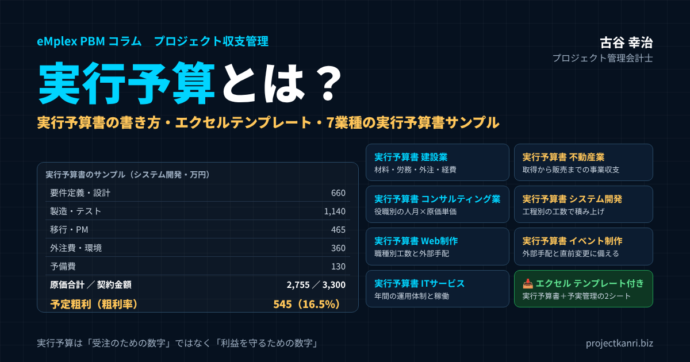

実行予算とは？実行予算書の書き方とエクセルテンプレート―建設業・不動産業・コンサルティング・システム開発・Web制作・イベント制作・ITサービスの業種別サンプル付き

結論：実行予算書は「受注した瞬間に利益を決める」いちばん大事な管理資料です
この記事の要点
- 実行予算とは：受注後、実際の計画にもとづいて原価を積み上げた「現場が守る目標原価」
- 見積との違い：見積は受注のための数字、実行予算は利益を守るための数字
- 実行予算書の書き方：契約確認→作業分解→数量×単価→外注見積→予備費→予定粗利→承認
- 実行予算 エクセル：2シート構成のテンプレートを無料ダウンロード
- 業種別サンプル：建設業・不動産業・コンサル・システム開発・Web制作・イベント制作・ITサービス
プロジェクト管理会計士の古谷です。今回は、プロジェクト型ビジネスの利益管理の出発点である、実行予算を取り上げます。
私は新卒で建設会社に入り、工事の現場と本社の両方で、実行予算という言葉を毎日のように耳にしてきました。その後、IT企業のCFOやエンターテインメント企業の経営企画を経験し、独立してからは200社を超えるプロジェクト型ビジネスの会社を支援してきました。業種は違っても、利益がきちんと出ている会社には共通点があります。それは、受注した案件ごとに実行予算を立て、その実行予算と実績を比べながらプロジェクトを進めていることです。
結論から申し上げます。実行予算書は、受注した瞬間にそのプロジェクトの利益を決める、いちばん大事な管理資料です。見積は、お客様に提示する価格を決めるための資料です。一方、実行予算は、受注した価格の中で、いくらの原価で仕事をやり遂げるのかを、社内で約束するための資料です。この約束がないまま走り出したプロジェクトは、終わってみるまで儲かったかどうかが分かりません。
本稿では、実行予算とは何かという基本から、実行予算書の項目と書き方、エクセルでの作り方、そして建設業、不動産業、コンサルティング業、システム開発、Web制作、イベント制作、ITサービスの七つの業種について、実行予算書のサンプルを示しながら解説します。記事の中で、そのまま使えるエクセルのテンプレートもダウンロードできるようにしました。
実行予算とは：受注後に「実際にかける原価」を決めた目標原価
実行予算とは、受注が決まったプロジェクトについて、実際の施工や作業の計画にもとづいて、完成までにかかる原価を費目ごとに積み上げ、目標として定めた予算のことです。建設業で古くから使われてきた言葉で、工事ごとに作る「工事実行予算」と呼ばれることもあります。
実行予算の特徴は、三つあります。一つ目は、受注後に作るということです。見積の段階では、まだ仕様も体制も確定していません。受注して、具体的な施工計画や作業計画、担当者、外注先が見えてきた段階で、改めて原価を積み上げ直します。
二つ目は、現場の目標になるということです。実行予算は、現場の責任者、つまり建設業なら現場代理人や工事主任、IT企業ならプロジェクトマネージャーが、この金額の中で仕事をやり遂げると約束する数字です。会社にとっては利益の計画であり、現場にとっては原価の上限です。
三つ目は、実績と比べる基準になるということです。プロジェクトの進行中は、実行予算と実際にかかった原価を比べ、どの費目がどれだけ予算を超えそうか、最終的にいくらで着地しそうかを見ていきます。実行予算がなければ、原価が多いのか少ないのかを判断する物差しがありません。
実行予算という言葉は建設業の用語として知られていますが、考え方そのものは、受注してから原価をかけて完成させるビジネスであれば、業種を問わず当てはまります。システム開発、Web制作、コンサルティング、イベント制作、保守運用などのITサービス、そして不動産の開発や買取再販でも、案件ごとの実行予算を立てることが、利益管理の基本になります。
見積・実行予算・実績の違い：三つの数字を混同しない
実行予算を理解するうえで大切なのは、見積、実行予算、実績という三つの数字の違いをはっきりさせることです。
| 項目 | 作る時期 | 目的 | 原価の根拠 |
|---|---|---|---|
| 見積 | 受注前 | お客様に提示する価格を決める | 過去の実績や標準単価による概算 |
| 実行予算 | 受注後・着手前 | 現場が守る目標原価と予定の粗利を決める | 施工・作業計画、発注予定先の見積 |
| 実績 | 進行中・完了後 | 実際にかかった原価を把握する | 請求書、作業時間×原価単価、経費精算 |
見積は、受注前に、お客様に提示する価格を決めるために作ります。見積原価に、会社として必要な利益を乗せて、見積金額を決めます。この段階の原価は、過去の実績や標準的な単価にもとづく概算であることがほとんどです。
実行予算は、受注後に、実際の計画にもとづいて原価を積み上げ直したものです。見積の時点よりも情報が増えているので、原価の精度は上がります。そして多くの場合、実行予算の原価は見積原価と一致しません。値引きをして受注した、仕様が変わった、外注先の金額が決まったなど、見積から受注までの間に条件が変わっているからです。
実績は、プロジェクトの進行中に、実際に発生した原価です。材料の請求書、外注先の請求、社員が作業した時間に単価を掛けた労務費、経費の精算などを集計して把握します。
よくある誤解は、見積原価をそのまま実行予算として使ってしまうことです。見積は、受注するための数字であって、現場が守るための数字ではありません。受注金額が見積より下がっているのに、見積原価をそのまま予算にすると、最初から計画上の利益が足りない状態でプロジェクトが始まります。受注後に原価を積み上げ直し、受注金額との差である予定の粗利を確認する。この手順こそが、実行予算を作る意味です。
なぜ実行予算が必要なのか：利益は受注時にほぼ決まる
プロジェクト型ビジネスでは、利益の大部分は受注した時点で決まると言われます。受注金額が決まり、実行予算で原価の見通しが決まれば、予定の粗利が決まります。プロジェクトが始まってから利益を大きく増やすことは難しく、できることの多くは、予定の粗利を守ること、つまり原価の超過を防ぐことです。
だからこそ、受注直後に実行予算を作ることに意味があります。実行予算を作ってみて、予定の粗利が会社の基準を下回るようであれば、プロジェクトが本格的に動き出す前に手を打つことができます。外注先との交渉、作業の進め方の見直し、体制の組み替えなどです。プロジェクトが進んでからでは、取れる手が限られてしまいます。
実行予算は、現場の責任を明確にする役割も果たします。実行予算があれば、現場の責任者は、どの費目にいくらまで使ってよいのかが分かります。逆に、実行予算がなければ、現場は原価を意識せずに仕事を進め、終わってから「思ったより儲からなかった」という結果になりがちです。
私が建設会社で経験した会社の苦境は、今でも忘れられません。受注は取れているのに、一件ごとの採算が見えていない。気づいたときには、赤字の工事が積み重なっていました。その経験から私は、売上の大きさではなく、受注した一件一件の実行予算と、その予実を見ることこそが、会社を守る管理だと考えるようになりました。
さらに、実行予算は会計の面でも重要です。受注制作のソフトウェアや工事などで、一定の期間にわたって収益を認識する場合、進捗度を原価の発生割合で測る方法では、完成までにかかる総原価の見積りが前提になります。この総原価の見積りの基礎となるのが、実行予算です。実行予算の精度は、決算の数字の確からしさにも関わるのです。
実行予算書の項目：最低限そろえたい基本情報と原価の費目
実行予算書には、決まった様式があるわけではありません。業種や会社によって形はさまざまですが、どの業種でも最低限そろえておきたい項目があります。
| 区分 | 項目 |
|---|---|
| 基本情報 | プロジェクトコード・名称、顧客名、期間、責任者、作成日、承認者 |
| 売上 | 契約金額・請負金額（追加契約・変更契約を含む） |
| 原価（建設業） | 材料費、労務費、外注費、経費（工種別にも集計） |
| 原価（IT・コンサル等） | 工程別・役職別の労務費（工数×原価単価）、外注費、直接経費 |
| 予備費 | 仕様変更・手戻り・価格変動などへの備え（費目として明示） |
| 利益 | 予定粗利（契約金額−原価合計）、予定粗利率 |
| 比較 | 見積原価との差、変更履歴 |
まず、基本情報です。プロジェクトのコードと名称、顧客名、期間、責任者、作成日、承認者を記載します。特に責任者と承認者の欄は大切です。誰がこの予算に責任を持ち、誰が承認したのかが明確でなければ、予算は単なる計算表になってしまいます。
次に、売上、つまり契約金額や請負金額です。実行予算は、この売上の中でいくらの原価をかけるかを決めるものなので、売上の金額が出発点になります。追加の契約や仕様の変更で売上が増減した場合も、実行予算書に反映します。
そして、原価の費目です。建設業では、材料費、労務費、外注費、経費の四つに分けるのが一般的です。これは建設業の決算で使われる完成工事原価報告書の区分とも一致しています。IT企業やコンサルティング会社では、社員の作業時間にもとづく労務費が原価の中心になり、そこに外注費とプロジェクトに直接かかる経費が加わります。
最後に、予定の粗利と粗利率です。売上から原価の合計を引いた予定の粗利と、それを売上で割った粗利率を、実行予算書の一番目立つところに表示します。経営者が実行予算書を見るとき、まず確認するのはこの数字です。
なお、予備費の扱いは会社によって考え方が分かれます。予備費を実行予算に含めず、現場にはぎりぎりの予算を渡して、予備は本社で持つという会社もあります。一方、予備費を費目として明示し、その使い道を承認制にする会社もあります。どちらの方法でも構いませんが、予備費を各費目に紛れ込ませて見えなくすることだけは避けてください。予算の余裕がどこにどれだけあるのかが分からなくなり、予実の比較が意味を失うからです。
実行予算書の書き方・作り方：7つのステップ
実行予算書は、次の七つのステップで作ります。
| ステップ | 内容 |
|---|---|
| 1. 契約条件の確認 | 契約金額、作業範囲、納期、支払条件、検収方法を確認する |
| 2. 作業の分解 | 工種・工程・成果物ごとに、実績を集計できる単位で分ける |
| 3. 数量と単価の見積り | 材料数量・作業時間などに単価を掛ける。労務費は工数×原価単価 |
| 4. 外注・仕入の見積取得 | 発注予定先の見積金額を反映する |
| 5. 予備費の設定 | 過去の実績からリスクに応じた予備を持つ |
| 6. 予定粗利の確認 | 基準の粗利率を下回れば、原価の見直しか経営判断 |
| 7. 承認 | 上長・経営者が承認し、正式な目標原価とする |
ステップ1は、契約の条件を確認することです。契約金額、作業の範囲、納期、支払の条件、検収の方法を確認します。作業の範囲が曖昧なまま実行予算を作ると、後から範囲の解釈をめぐって原価が膨らみます。
ステップ2は、作業を分解することです。プロジェクトの作業を、工程や成果物ごとに分解します。建設業であれば工種ごと、システム開発であれば要件定義、設計、製造、テストといった工程ごとに分けます。この分解が細かすぎると管理の手間が増え、粗すぎると原価の超過がどこで起きたのかが分からなくなります。実績を集計できる単位で分けることが大切です。
ステップ3は、数量と単価を見積もることです。分解した作業ごとに、材料の数量、作業の時間、外注の金額などを見積もり、単価を掛けて金額を出します。社員の労務費は、作業時間に、社内で決めた時間あたりの原価単価を掛けて計算します。単価は、給与だけでなく、社会保険料や賞与なども含めた人件費をもとに決めておく必要があります。
ステップ4は、外注先や仕入先から見積を取ることです。外注費や材料費は、実際に発注する先から見積を取り、その金額を実行予算に反映します。受注前の概算ではなく、発注予定の金額を使うことで、実行予算の精度が大きく上がります。
ステップ5は、予備費を設定することです。仕様の変更、手戻り、天候、価格の変動など、プロジェクトには予期せぬ事態が起きます。過去の実績から、どの程度の予備を持つべきかを判断します。
ステップ6は、予定の粗利を確認することです。原価を合計し、契約金額から引いて、予定の粗利と粗利率を出します。会社が定めた基準の粗利率を下回る場合は、原価を下げる手立てを検討するか、そのまま進めるかを経営として判断します。
ステップ7は、承認を得ることです。現場の責任者が作った実行予算を、上長や経営者が確認し、承認します。承認された実行予算が、そのプロジェクトの正式な目標になります。承認の後は、実行予算をむやみに変えないことが原則です。変更する場合は、後で述べるように、理由を記録したうえで、改めて承認を得ます。
実行予算は、受注後なるべく早く作ることが大切です。目安として、受注から一、二週間以内、遅くともプロジェクトが本格的に動き出す前には承認まで終えておきたいところです。実行予算ができる前に原価がどんどん発生してしまうと、予算は実績の後追いになり、目標としての意味を失います。
労務費の原価単価の決め方：実行予算の精度を左右する数字
システム開発、Web制作、コンサルティング、ITサービスのように、社員の作業時間が原価の中心になる業種では、時間あたりの原価単価をどう決めるかが、実行予算の精度を大きく左右します。
原価単価は、社員の給与だけで計算してはいけません。賞与、会社が負担する社会保険料、通勤費や福利厚生費なども含めた年間の人件費を出し、それを年間にプロジェクトに使える時間で割って求めます。ここでいう時間は、所定の労働時間そのものではなく、社内の会議や教育、営業の支援など、プロジェクトに直接使わない時間を差し引いた時間です。この時間を多く見積もりすぎると、原価単価が低くなり、実行予算は実態よりも甘くなります。
原価単価は、一人ひとりの給与で決める方法と、役職や等級ごとの平均で決める方法があります。個人の給与がプロジェクトの担当者に見えてしまうことを避けるため、多くの会社では役職や等級ごとの標準の単価を使っています。標準の単価は、少なくとも年に一度、実際の人件費と比べて見直してください。
外注の技術者を時間単価や月額で契約している場合も、実行予算では社員と同じように工数と単価で積み上げておくと、社員と外注の工数の配分を比べやすくなります。
実行予算をエクセルで作る：テンプレートと数式の組み方
実行予算書を最初に作るときは、エクセルで十分です。この記事では、そのまま使えるエクセルのテンプレートを用意しました。
📥 実行予算書テンプレート（エクセル）をダウンロード
「実行予算書」と「予実管理（着地見込み）」の2シートで構成。黄色のセルに入力すると、合計・粗利・粗利率・差異が自動で計算されます。数値は説明のための例です。
テンプレートは、二つのシートで構成しています。一つ目の「実行予算書」のシートでは、上部に基本情報と契約金額を入力し、その下の表に、費目ごとの数量と単価を入力します。実行予算の金額は、数量と単価を掛けて自動で計算されます。
| 列 | 内容 | 入力・数式 |
|---|---|---|
| 区分・費目・内容 | 労務費・外注費・経費・予備費などの区分と費目名 | 入力 |
| 数量・単位・単価 | 作業時間や数量、単価 | 入力（黄色のセル） |
| 実行予算 | 費目ごとの金額 | ＝数量×単価 |
| 見積原価 | 受注前の見積の原価 | 入力（黄色のセル） |
| 見積との差 | 見積原価−実行予算 | ＝見積原価−実行予算 |
| 構成比 | 原価合計に占める割合 | ＝実行予算÷原価合計 |
| 予定粗利・粗利率 | 契約金額−原価合計、予定粗利÷契約金額 | SUM関数とIF関数 |
エクセルで実行予算書を作るときのポイントは、三つあります。一つ目は、入力するセルと計算するセルを分けることです。テンプレートでは、入力するセルを黄色にしています。計算するセルに直接数字を打ち込んでしまうと、数式が消えて、合計が合わなくなる原因になります。
二つ目は、見積原価との差を並べて表示することです。テンプレートでは、実行予算の隣に見積原価の列を置き、その差を計算しています。見積よりも実行予算の原価が増えている費目は、なぜ増えたのかを説明できるようにしておきます。
三つ目は、予定の粗利と粗利率を、必ず数式で計算することです。粗利率は「予定粗利÷契約金額」で求めます。テンプレートでは、契約金額が空欄のときにエラーにならないよう、IF関数で空欄の場合を除いています。
二つ目の「予実管理（着地見込み）」のシートでは、実行予算の金額を一つ目のシートから参照し、実績の累計と、残りの作業にかかる見込みを入力します。この二つを足したものが着地見込みで、実行予算との差異が自動で計算されます。毎月の締めのたびに、このシートを更新することで、実行予算の予実管理ができます。
エクセルの数式としては、実行予算の金額は「数量×単価」、原価合計はSUM関数、着地見込みは「実績＋残作業の見込み」、差異は「実行予算−着地見込み」と、いずれも簡単なものです。難しい数式は必要ありません。大切なのは、この形を全プロジェクトで統一し、同じ様式で実行予算を作り、管理することです。
業種別の実行予算書サンプル：7業種の作り方とポイント
ここからは、業種ごとに実行予算書のサンプルを示しながら、作り方のポイントを解説します。金額はいずれも説明のための架空の例で、単位は万円です。実行予算の基本的な考え方は共通していますが、原価の中心となる費目や、予算を超えやすいポイントは、業種によって大きく異なります。
自社の業種のサンプルを出発点として、費目を自社の実態に合わせて調整してみてください。
実行予算書 建設業：工種別・要素別に原価を積み上げる
建設業は、実行予算という考え方が最も根付いている業種です。工事を受注すると、現場の責任者が施工計画を立て、工種ごとに必要な材料、作業員、専門工事業者、仮設や機械を洗い出して、実行予算を作ります。
| 費目 | 内容 | 実行予算 | 構成比 |
|---|---|---|---|
| 材料費 | 鉄筋・コンクリート・型枠・仕上材など | 1,400 | 32.6% |
| 労務費 | 自社の直傭の作業員・現場監督の人件費 | 600 | 14.0% |
| 外注費 | 躯体・設備・内装などの専門工事業者 | 1,800 | 41.9% |
| 経費 | 仮設費・機械損料・運搬費・現場事務所費など | 400 | 9.3% |
| 予備費 | 設計変更や天候による追加の備え | 100 | 2.3% |
| 原価合計 | 4,300 | 100.0% | |
| 請負金額 | 5,000 | ||
| 予定粗利 | 700 | ||
| 予定粗利率 | 14.0% |
金額は説明のための架空の例です。
建設業の実行予算書では、工種別と要素別の二つの切り口で原価を整理するのが一般的です。工種別とは、仮設工事、土工事、躯体工事、仕上工事、設備工事といった工事の種類ごとの分類です。要素別とは、材料費、労務費、外注費、経費の四つの分類です。サンプルでは要素別の合計を示していますが、実務では工種ごとに要素別の内訳を持たせ、縦横で集計できるようにします。
建設業の実行予算で特に注意したいのは、外注費の比率の高さです。サンプルでも原価の四割強を外注費が占めています。専門工事業者への発注金額が実行予算を超えると、それだけで利益が大きく削られます。発注前に複数の業者から見積を取り、実行予算の範囲で発注できるかを確認することが、建設業の実行予算管理の要です。
もう一つは、設計変更への対応です。工事の途中で発注者から仕様の変更を求められることは珍しくありません。変更に伴う追加の原価を実行予算に反映するとともに、発注者への追加の請求を確実に行う必要があります。原価だけが増えて請負金額が増えないという事態を防ぐため、設計変更の記録と、実行予算の変更を必ずセットで管理してください。
資材の価格が大きく変動する局面では、材料費の予算も見直しが必要になります。発注の時期と価格の見通しを、実行予算を作る段階で現場と購買の担当者がすり合わせておくことが大切です。建設業における実行予算と現場管理については、別のコラムでも詳しく解説していますので、あわせてご覧ください。
実行予算書 不動産業：取得から販売までの事業収支で考える
不動産業で実行予算が使われるのは、主に開発や買取再販のように、物件を仕入れて付加価値をつけ、販売する事業です。ここでは、中古のマンションを買い取り、リノベーションして再販売する事業を例にします。
| 費目 | 内容 | 実行予算 | 構成比 |
|---|---|---|---|
| 物件取得費 | 購入代金 | 3,200 | 76.6% |
| リノベーション工事費 | 内装・設備の更新工事 | 600 | 14.4% |
| 取得・販売の諸費用 | 仲介手数料・登記・税金など | 180 | 4.3% |
| 金融費用 | 保有期間中の借入金利息 | 60 | 1.4% |
| 販売費 | 広告・内覧対応など | 90 | 2.2% |
| 予備費 | 工事の追加・販売期間の延長への備え | 50 | 1.2% |
| 原価合計 | 4,180 | 100.0% | |
| 販売見込額 | 4,800 | ||
| 予定粗利 | 620 | ||
| 予定粗利率 | 12.9% |
金額は説明のための架空の例です。
不動産業の実行予算は、建設業のような工事の原価だけでなく、物件の取得から販売までにかかるすべての費用を、一つの事業の収支として捉えるところに特徴があります。物件の取得費、リノベーションの工事費、取得や販売にかかる諸費用、保有している間の借入金の利息、販売のための広告費などを積み上げ、販売の見込額と比べて予定の利益を出します。
不動産業の実行予算で最も大きなリスクは、販売の見込額と販売までの期間です。売上が契約で確定している請負の仕事と違い、不動産の販売価格は市場の動向に左右されます。販売までの期間が延びれば、利息などの保有コストが増え、値下げを迫られれば売上が減ります。そのため、実行予算には販売価格と販売期間の前提を明記し、その前提が崩れたときにどれだけ利益が変わるかを、あらかじめ試算しておくことをお勧めします。
リノベーションの工事費は、建設業と同じく、工事の内容ごとに積み上げます。物件を取得してから壁や床を開けてみると、配管の劣化などの想定外の問題が見つかることがあります。予備費は、こうした工事の追加と、販売期間の延長の両方に備えて設定します。
開発のように期間が長く、金額が大きい事業では、着工前、竣工時、販売の途中といった節目ごとに、実行予算と着地の見込みを見直します。事業の収支表と実行予算を同じ形式でそろえておくと、投資の判断から事業の完了まで、一貫した数字で管理できます。
実行予算書 コンサルティング業：人月と原価単価で組み立てる
コンサルティング業の原価の中心は、コンサルタントの人件費です。材料や外注の比率が低く、誰が、どれだけの時間をそのプロジェクトに使ったかで、原価がほぼ決まります。
| 費目 | 内容 | 実行予算 | 構成比 |
|---|---|---|---|
| マネージャー労務費 | 3人月×150万円（原価単価） | 450 | 28.1% |
| コンサルタント労務費 | 6人月×100万円 | 600 | 37.5% |
| アナリスト労務費 | 6人月×60万円 | 360 | 22.5% |
| 外部専門家費 | 業界の専門家へのヒアリング・助言 | 90 | 5.6% |
| 旅費交通費 | 顧客先への出張 | 60 | 3.8% |
| 予備費 | 範囲の拡大への備え | 40 | 2.5% |
| 原価合計 | 1,600 | 100.0% | |
| 契約金額 | 2,400 | ||
| 予定粗利 | 800 | ||
| 予定粗利率 | 33.3% |
金額は説明のための架空の例です。
コンサルティング業の実行予算書は、役職ごとの投入工数と原価単価で組み立てます。サンプルでは、マネージャー、コンサルタント、アナリストの三つの役職について、六か月間の投入人月に、役職ごとの月あたりの原価単価を掛けています。原価単価は、給与、賞与、社会保険料などの人件費をもとに、会社として役職ごとに定めておきます。
コンサルティング業の実行予算で注意したいのは、スコープの拡大です。プロジェクトが進むにつれて、お客様から「ついでにこれも見てほしい」という依頼が増えていきます。一つひとつは小さな依頼でも、積み重なると投入工数が実行予算を大きく超えてしまいます。実行予算を作る際には、契約で約束した範囲を明確にし、範囲外の依頼は追加の契約にするか、断るかを判断するルールを決めておきます。
もう一つのポイントは、上位の役職の工数です。プロジェクトが難航すると、マネージャーやパートナーの関与が増えます。上位の役職ほど原価単価が高いため、関与の時間が少し増えるだけでも原価は大きく増えます。役職ごとの工数を分けて実行予算を立て、実績も役職ごとに把握することが大切です。
コンサルティング業では、実行予算の管理が、そのまま稼働の管理になります。タイムシートで日々の作業時間を正確に記録し、プロジェクトごとに実行予算と比べる仕組みがなければ、原価の超過に気づくのは請求のときになってしまいます。
実行予算書 システム開発：工程別の工数で積み上げる
システム開発の受託では、実行予算を工程ごとの工数で積み上げます。要件定義、設計、製造、テスト、移行といった工程ごとに必要な作業時間を見積もり、時間あたりの原価単価を掛けて労務費を出します。そこに外注費、ライセンスや開発環境の費用、予備費を加えます。
| 費目 | 内容 | 実行予算 | 構成比 |
|---|---|---|---|
| 要件定義 | 300時間×8,000円 | 240 | 8.7% |
| 設計 | 600時間×7,000円 | 420 | 15.2% |
| 製造（開発） | 1,200時間×6,000円 | 720 | 26.1% |
| テスト | 700時間×6,000円 | 420 | 15.2% |
| 移行・導入 | 150時間×7,000円 | 105 | 3.8% |
| プロジェクト管理 | 400時間×9,000円 | 360 | 13.1% |
| 外注費 | 一部機能の開発委託 | 300 | 10.9% |
| ライセンス・開発環境 | クラウド・ツール利用料 | 60 | 2.2% |
| 予備費 | 仕様変更・手戻りへの備え | 130 | 4.7% |
| 原価合計 | 2,755 | 100.0% | |
| 契約金額 | 3,300 | ||
| 予定粗利 | 545 | ||
| 予定粗利率 | 16.5% |
金額は説明のための架空の例です。
このサンプルは、この記事でダウンロードできるエクセルのテンプレートと同じ数字にしています。契約金額3,300万円に対して原価合計2,755万円、予定の粗利は545万円、粗利率は16.5％です。テンプレートを開いて、数字の動きを確かめてみてください。
システム開発の実行予算で最も注意したいのは、工程の後半での原価の超過です。要件定義や設計の段階で仕様が固まりきらないまま進むと、製造やテストの段階で手戻りが発生し、工数が一気に膨らみます。実行予算を立てる際には、要件定義と設計の工数を削りすぎないことが、結果として全体の原価を抑えることにつながります。
また、テストの工数は過小に見積もられがちです。サンプルではテストに700時間を見込んでいますが、品質の問題が見つかれば修正と再テストが繰り返され、予定を大きく超えることがあります。過去のプロジェクトで、工程ごとの工数の比率がどうだったかを振り返り、実行予算の妥当性を確認することをお勧めします。
会計の面では、受注制作のソフトウェアは、進捗に応じて収益を認識する場合があり、その際には見積った総原価に対する発生原価の割合で進捗度を測ることがあります。この総原価の見積りが、まさに実行予算です。実行予算の見直しが遅れると、決算の数字にも影響します。ソフトウェア開発の原価計算については、別のコラムで詳しく解説しています。
実行予算書 Web制作：職種別の工数と外部手配を分ける
Web制作は、一件あたりの金額は比較的小さいものの、案件の数が多く、一件ずつの採算が見えにくい業種です。ディレクター、デザイナー、エンジニアといった職種ごとの工数と、撮影や原稿作成などの外部への手配を分けて、実行予算を作ります。
| 費目 | 内容 | 実行予算 | 構成比 |
|---|---|---|---|
| ディレクション | 120時間×7,000円 | 84 | 19.2% |
| デザイン | 160時間×6,000円 | 96 | 21.9% |
| コーディング | 200時間×5,000円 | 100 | 22.8% |
| CMS構築 | 80時間×6,000円 | 48 | 11.0% |
| 撮影・素材 | 撮影の外注・写真素材 | 50 | 11.4% |
| ライティング | 原稿作成の外注 | 30 | 6.8% |
| サーバー・ドメイン等 | 初年度の利用料 | 10 | 2.3% |
| 予備費 | 修正回数の超過への備え | 20 | 4.6% |
| 原価合計 | 438 | 100.0% | |
| 契約金額 | 600 | ||
| 予定粗利 | 162 | ||
| 予定粗利率 | 27.0% |
金額は説明のための架空の例です。
Web制作の実行予算で最も多い失敗は、修正の回数による工数の超過です。デザインの修正が何度も繰り返される、公開直前になって原稿の差し替えが続く、といったことが重なると、ディレクションとデザインの工数があっという間に予算を超えます。サンプルでは修正回数の超過に備えて予備費を設けていますが、それ以上に大切なのは、契約や提案の段階で修正の回数や範囲を取り決めておくことです。
もう一つは、ディレクションの工数の見落としです。Web制作では、お客様との打ち合わせ、進行の管理、制作スタッフへの指示など、ディレクターの時間が想像以上にかかります。実行予算でディレクションの工数を独立した費目として持ち、実績も記録することで、どの案件でディレクションに時間がかかっているかが見えるようになります。
案件の数が多いWeb制作会社では、すべての案件で詳細な実行予算を作るのは負担が大きいかもしれません。その場合は、一定の金額以上の案件だけ詳細な実行予算を作り、小さな案件は職種別の工数の上限だけを決める、といった運用の工夫も有効です。
実行予算書 イベント制作：外部手配の積み上げと直前の変更に備える
イベント制作は、会場、施工、音響や照明、運営スタッフ、出演者など、多くの外部への手配を組み合わせて一つのイベントをつくる仕事です。原価の大部分が外部への支払で、手配先の数が多いことが特徴です。
| 費目 | 内容 | 実行予算 | 構成比 |
|---|---|---|---|
| 会場費 | 会場・付帯設備の使用料 | 400 | 21.1% |
| 設営・施工 | ブース・ステージの施工・撤去 | 500 | 26.3% |
| 音響・照明・映像 | 機材と技術スタッフ | 250 | 13.2% |
| 運営スタッフ | 受付・誘導・進行の人員 | 180 | 9.5% |
| 出演料 | 登壇者・司会者 | 150 | 7.9% |
| 制作物 | パンフレット・サイン・ノベルティ | 80 | 4.2% |
| 企画・ディレクション（自社） | 自社の人件費 | 160 | 8.4% |
| 交通・宿泊・輸送 | スタッフと機材の移動 | 70 | 3.7% |
| 保険・警備 | イベント保険・警備員 | 40 | 2.1% |
| 予備費 | 直前の追加手配への備え | 70 | 3.7% |
| 原価合計 | 1,900 | 100.0% | |
| 契約金額 | 2,200 | ||
| 予定粗利 | 300 | ||
| 予定粗利率 | 13.6% |
金額は説明のための架空の例です。
イベント制作の実行予算は、手配の項目ごとに積み上げます。サンプルでは、会場費、設営と施工、音響・照明・映像、運営スタッフ、出演料、制作物、自社の企画とディレクションの人件費、交通や宿泊、保険や警備を計上しています。外部への手配は、発注の前に見積を取り、実行予算の範囲に収まるかを確認します。
イベント制作の実行予算で特に注意したいのは、直前の変更です。来場者の数が想定を上回った、出演者が追加になった、演出の内容が変わったなど、イベントの直前になって手配を追加することがよくあります。直前の手配は割高になりやすく、予算を超える大きな原因になります。サンプルでは予備費を他の業種よりもやや厚めに設定しています。
また、イベント制作では、自社のスタッフの人件費が見落とされがちです。企画、手配、当日の運営に、自社の社員が多くの時間を使っているにもかかわらず、外部への支払だけを原価として管理していると、実際の採算は見かけよりも悪くなります。自社の人件費も実行予算に含め、タイムシートで実績を把握することをお勧めします。
イベントは終わった後の精算にも時間がかかります。手配先からの請求が出そろうまで、最終的な原価が確定しません。イベントの終了後、なるべく早く請求を集め、実行予算との差を振り返ることで、次のイベントの実行予算の精度を高めることができます。
実行予算書 ITサービス：年間の運用体制と稼働で考える
システムの保守運用やヘルプデスクなどのITサービスは、一定の期間にわたって継続的にサービスを提供する仕事です。開発のように完成を目指すプロジェクトとは違い、実行予算は契約の期間、たとえば一年間の運用にかかる原価として作ります。
| 費目 | 内容 | 実行予算 | 構成比 |
|---|---|---|---|
| 運用担当の労務費 | 1.5人月/月×12か月×70万円 | 1,260 | 82.0% |
| 管理（PM）の労務費 | 0.1人月/月×12か月×100万円 | 120 | 7.8% |
| 監視ツール・クラウド | 月8万円×12か月 | 96 | 6.2% |
| 障害対応の予備 | 想定を超える障害対応への備え | 60 | 3.9% |
| 原価合計 | 1,536 | 100.0% | |
| 年間契約金額（月額150万円×12か月） | 1,800 | ||
| 予定粗利 | 264 | ||
| 予定粗利率 | 14.7% |
金額は説明のための架空の例です。
ITサービスの実行予算は、運用の体制と、それぞれの担当者がどれだけの時間をそのサービスに使うかで組み立てます。サンプルでは、運用担当が月に1.5人月、管理の担当が月に0.1人月を使う前提で、一年間の労務費を計算しています。そこに監視ツールやクラウドの利用料、障害対応の予備を加えています。
ITサービスの実行予算で注意したいのは、障害や問い合わせの件数が想定を超えることです。システムの障害が続けば、運用担当の工数は一気に増えます。また、契約の範囲が曖昧なまま運用を始めると、本来は追加の費用をいただくべき改修の作業まで、保守の範囲として引き受けてしまうことがあります。
ITサービスでは、一年間の実行予算を月ごとに分け、毎月の予実を確認するのが基本です。複数の顧客の運用を同じ担当者が兼務している場合は、担当者の時間を顧客ごとに正しく配分しなければ、どの契約が儲かっていて、どの契約が赤字なのかが分かりません。タイムシートで顧客ごとの作業時間を記録することが、ITサービスの実行予算管理の前提になります。
契約を更新する時期には、一年間の実行予算と実績を比べ、契約金額や運用の体制を見直す材料にします。実績を根拠にした更新の交渉ができるのも、実行予算を立てて管理しているからこそです。
業種別の比較：原価の中心と、予算を超えやすいポイント
ここまで見てきた七つの業種について、実行予算の特徴を一つの表にまとめます。
| 業種 | 原価の中心 | 予算を超えやすいポイント | サンプルの予定粗利率 |
|---|---|---|---|
| 建設業 | 外注費・材料費 | 専門工事業者への発注、設計変更、資材価格 | 14.0% |
| 不動産業 | 物件取得費・工事費 | 販売価格の下落、販売期間の延長 | 12.9% |
| コンサルティング業 | 役職別の労務費 | スコープの拡大、上位役職の関与増 | 33.3% |
| システム開発 | 工程別の労務費 | 仕様の未確定による手戻り、テスト工数 | 16.5% |
| Web制作 | 職種別の労務費 | 修正回数の超過、ディレクション工数 | 27.0% |
| イベント制作 | 外部への手配費 | 直前の追加手配、自社人件費の見落とし | 13.6% |
| ITサービス | 運用担当の労務費 | 障害・問い合わせの増加、範囲外の作業 | 14.7% |
業種によって、原価の中心も、予算を超えやすいポイントも異なります。しかし、共通していることがあります。それは、原価の中心となる費目を、実績が把握できる単位で予算化し、実行予算と実績を同じ単位で比べることです。材料や外注が中心の業種では発注の金額を、人件費が中心の業種では作業の時間を、日々正確に把握することが、実行予算の管理の土台になります。
なお、表の予定粗利率は、この記事のサンプルの数字であり、業界の標準を示すものではありません。会社の規模や事業の内容によって、目指すべき粗利率は大きく異なります。自社の過去の実績から、プロジェクトの種類ごとの基準の粗利率を設定することをお勧めします。
実行予算の予実管理：実績と着地見込みで原価の超過を早く見つける
実行予算は、作って終わりではありません。プロジェクトの進行中に、実行予算と実績を比べ、最終的にいくらで着地しそうかを見通すことで、初めて利益を守る道具になります。
ここで大切なのは、実績の累計だけを見ないことです。実績の累計が実行予算より少なくても、残りの作業にかかる原価を足すと、予算を超えてしまうことがあります。そこで、実績の累計に、残りの作業にかかる見込みを加えた「着地見込み」を出し、実行予算と比べます。
| 費目 | 実行予算 | 実績累計 | 残作業の見込み | 着地見込み | 差異 |
|---|---|---|---|---|---|
| 要件定義 | 240 | 240 | 0 | 240 | 0 |
| 設計 | 420 | 420 | 30 | 450 | ▲30 |
| 製造（開発） | 720 | 360 | 420 | 780 | ▲60 |
| テスト | 420 | 0 | 460 | 460 | ▲40 |
| 移行・導入 | 105 | 0 | 110 | 110 | ▲5 |
| プロジェクト管理 | 360 | 180 | 190 | 370 | ▲10 |
| 外注費 | 300 | 120 | 190 | 310 | ▲10 |
| ライセンス・開発環境 | 60 | 30 | 30 | 60 | 0 |
| 予備費 | 130 | 0 | 100 | 100 | 30 |
| 原価合計 | 2,755 | 1,350 | 1,530 | 2,880 | ▲125 |
| 粗利（契約金額3,300） | 545（16.5%） | 420（12.7%） | ▲125 |
差異＝実行予算−着地見込み。▲は実行予算の超過。エクセルテンプレートの「予実管理（着地見込み）」シートと同じ数字です。
上の表は、先ほどのシステム開発のサンプルについて、プロジェクトの中盤で着地の見込みを出した例です。実績の累計は1,350万円で、実行予算の半分ほどです。実績だけを見れば、まだ余裕があるように見えます。しかし、残りの作業の見込みを加えると、着地見込みは2,880万円になり、実行予算を125万円超える見通しです。予定の粗利は545万円から420万円に、粗利率は16.5％から12.7％に下がります。
費目ごとに見ると、製造で60万円、テストで40万円、設計で30万円の超過が見込まれています。設計の段階で仕様が固まりきらず、製造とテストに手戻りが波及している、という典型的なパターンです。この段階で気づけば、テストの進め方を見直す、お客様と仕様の変更による追加の費用を協議する、といった手を打つことができます。
着地見込みは、毎月の締めのたびに更新します。残りの作業の見込みは、現場の責任者が出すのが原則です。数字を出すだけでなく、なぜ見込みが変わったのか、どのような手を打つのかを、あわせて報告してもらいます。予実管理の進め方や、差異の分析の方法については、予実管理のコラムで詳しく解説していますので、あわせてご覧ください。
実行予算の承認と変更管理：予算は「動かさない」が原則
実行予算は、承認を得た後は、むやみに変更しないことが原則です。原価が予算を超えそうになるたびに実行予算を増やしていけば、実行予算と実績の差は常に小さく見えますが、それでは予算が目標としての役割を果たしません。
ただし、正当な理由で実行予算を変更すべき場合もあります。お客様からの仕様の変更や追加の発注で契約金額が変わったとき、作業の範囲が正式に変わったとき、などです。こうした場合は、変更の理由、変更前と変更後の金額、追加の請求の有無を記録したうえで、当初と同じように承認を得てから実行予算を変更します。
| 区分 | 例 | 対応 |
|---|---|---|
| 変更してよい | 仕様変更・追加発注で契約金額が変わった | 変更理由・前後の金額・追加請求を記録し、再承認 |
| 変更してよい | 作業範囲が正式に変わった | 契約・覚書で範囲を確定してから変更 |
| 変更しない | 現場の作業効率が悪く原価が増えそう | 予算は据え置き、着地見込みで超過を管理し対策 |
| 変更しない | 予実の差を小さく見せたい | 予算の目標としての役割が失われるため不可 |
変更の管理で大切なのは、当初の実行予算を残しておくことです。変更後の実行予算だけを見ていると、プロジェクトの途中で利益の見通しがどれだけ変わったのかが分からなくなります。当初の実行予算、変更後の実行予算、着地見込み、そして最終の実績を並べて見られるようにしておくと、プロジェクトの完了後の振り返りで、見積や実行予算の精度を高める材料になります。
また、実行予算の承認や変更を、メールや口頭で済ませている会社も少なくありません。誰が、いつ、どの金額を承認したのかが記録に残っていないと、後から原価の超過の責任を問うことも、改善の手を打つことも難しくなります。承認の記録が残る仕組みを用意しておくことは、内部統制の面でも大切です。
実行予算でよくある失敗と対策
最後に、実行予算でよくある失敗と、その対策をまとめます。
| 失敗 | 起きること | 対策 |
|---|---|---|
| 見積原価をそのまま実行予算にする | 値引き分だけ最初から利益が足りない | 受注後に原価を積み上げ直す |
| 実行予算を作るのが遅い | 予算が実績の後追いになる | 受注後1〜2週間、着手前に承認 |
| 予備費を各費目に紛れ込ませる | 余裕の所在が見えず予実比較が無意味に | 予備費を費目として明示し承認制に |
| 実績を累計だけで見る | 残作業を含めた超過に気づかない | 毎月、着地見込みを更新する |
| 社員の労務費を原価に入れない | 見かけより採算が悪い | タイムシートで工数を把握し原価単価を掛ける |
| 予算を頻繁に増額する | 予実の差が常に小さく見える | 変更は正式な理由がある場合だけ、再承認 |
| 完了後に振り返らない | 同じ超過が繰り返される | 当初予算・変更後・実績を並べて記録 |
これらの失敗の多くは、実行予算を「作ること」が目的になってしまい、「使うこと」まで設計されていないことから生まれます。実行予算は、プロジェクトの開始前に作り、進行中は毎月の着地見込みと比べ、完了後には振り返りに使う。この一連の流れを、すべてのプロジェクトで当たり前に回すことが大切です。
特に、完了後の振り返りは見落とされがちです。当初の実行予算と最終の実績を比べ、どの費目で、なぜ差が生まれたのかを記録しておくと、次の見積と実行予算の精度が確実に上がります。同じ種類のプロジェクトで同じ費目の超過が繰り返されているなら、それは現場の問題ではなく、見積や実行予算の作り方の問題です。
エクセルの限界と、実行予算の管理をシステム化するという選択
実行予算の管理は、エクセルから始めて構いません。しかし、プロジェクトの数が増えてくると、エクセルでの管理には限界が見えてきます。
一つ目は、実績の集計の手間です。外注費や経費の請求書、社員の作業時間を、プロジェクトごとに集計してエクセルに転記する作業は、プロジェクトの数に比例して増えていきます。集計に時間がかかれば、着地見込みの更新が遅れ、手を打つ時期を逃します。
二つ目は、全体の把握の難しさです。プロジェクトごとにエクセルのファイルが分かれていると、会社全体でどのプロジェクトが予算を超えそうなのかを一覧で見ることができません。経営者が知りたいのは、一件ごとの詳細よりも、まず「どのプロジェクトが危ないのか」です。
三つ目は、承認と変更の記録です。エクセルのファイルは誰でも書き換えられるため、承認された実行予算がいつ、誰によって変えられたのかを追うことが難しくなります。
私たちが提供しているプロジェクト管理会計のクラウドサービス「eMplex PBM」は、こうした課題に応えるために作ったものです。業種別のテンプレートで、売上、労務費、外注費、直接経費の予算をプロジェクトごとに立てることができ、タイムシートで入力した作業時間は労務費の原価に連携されます。フォーキャストレポートでは、プロジェクトごとの着地の見込みと粗利率を一覧で確認でき、粗利率のアラートで、予算を超えそうなプロジェクトを早く見つけることができます。承認の操作は監査ログとして記録されます。実行予算の管理をエクセルから一歩進めたいとお考えの方は、選択肢の一つとしてご検討いただければ幸いです。
まとめ：実行予算書を、すべてのプロジェクトの「出発点」に
実行予算とは、受注したプロジェクトを、実際にいくらの原価で完成させるかを定めた目標原価です。見積が受注のための数字であるのに対し、実行予算は現場が守るための数字です。
実行予算書には、基本情報、契約金額、費目ごとの原価、予定の粗利と粗利率をそろえ、責任者と承認者を明確にします。作り方は、契約条件の確認、作業の分解、数量と単価の見積り、外注先の見積の取得、予備費の設定、予定粗利の確認、承認の七つのステップです。建設業、不動産業、コンサルティング業、システム開発、Web制作、イベント制作、ITサービスと、業種によって原価の中心や注意すべきポイントは異なりますが、実績を把握できる単位で予算を立て、着地見込みと比べ続けるという基本は共通しています。
まずは、次に受注するプロジェクトで、この記事のエクセルのテンプレートを使って実行予算書を作ってみてください。そして毎月、着地見込みの欄を更新してみてください。それだけで、プロジェクトの利益は「終わってみないと分からないもの」から、「途中で手を打てるもの」に変わり始めるはずです。
よくある質問（FAQ）
Q. 実行予算とは何ですか？
A. 受注したプロジェクトについて、実際の施工や作業の計画にもとづき、完成までにかかる原価を費目ごとに積み上げて目標として定めた予算です。建設業で古くから使われてきた言葉ですが、システム開発、Web制作、コンサルティング、イベント制作、ITサービス、不動産の開発・買取再販など、受注してから原価をかけて完成させるビジネスに共通する考え方です。
Q. 実行予算と見積の違いは何ですか？
A. 見積は受注前にお客様へ提示する価格を決めるための数字で、実行予算は受注後に実際の計画にもとづいて原価を積み上げ直した、現場が守るための目標原価です。受注金額が見積から下がっていることも多いため、見積原価をそのまま実行予算にせず、受注後に作り直して予定の粗利を確認します。
Q. 実行予算書にはどのような項目が必要ですか？
A. プロジェクトのコード・名称、顧客名、期間、責任者、作成日、承認者といった基本情報、契約金額（売上）、費目ごとの原価（建設業なら材料費・労務費・外注費・経費、IT・コンサルなら工程別や役職別の労務費・外注費・経費）、予備費、予定の粗利と粗利率です。
Q. 実行予算書の書き方の手順を教えてください。
A. ①契約条件の確認、②作業の分解、③数量と単価の見積り、④外注先・仕入先からの見積の取得、⑤予備費の設定、⑥予定の粗利の確認、⑦承認、の7つのステップで作ります。受注後なるべく早く、プロジェクトが本格的に動き出す前に承認まで終えるのが理想です。
Q. 実行予算はエクセルで作れますか？
A. 作れます。入力するセルと計算するセルを分け、実行予算＝数量×単価、原価合計＝SUM、予定粗利＝契約金額−原価合計、粗利率＝予定粗利÷契約金額といった簡単な数式で組み立てます。この記事で実行予算書と予実管理（着地見込み）の2シート構成のテンプレートをダウンロードできます。
Q. 建設業の実行予算書の特徴は何ですか？
A. 工種別（仮設・躯体・仕上・設備など）と要素別（材料費・労務費・外注費・経費）の二つの切り口で原価を整理するのが一般的です。外注費の比率が高いため、専門工事業者への発注を実行予算の範囲に収めることと、設計変更に伴う追加原価と追加請求をセットで管理することが要になります。
Q. システム開発やITサービスの実行予算書はどう作りますか？
A. システム開発は要件定義・設計・製造・テスト・移行・プロジェクト管理といった工程ごとの工数に原価単価を掛けて労務費を積み上げ、外注費やライセンス費、予備費を加えます。保守運用などのITサービスは、契約期間の運用体制と担当者の稼働から年間の原価を組み立て、月ごとに予実を確認します。
Q. 実行予算は途中で変更してもよいですか？
A. 承認後はむやみに変更しないのが原則です。仕様変更や追加発注で契約金額や作業範囲が正式に変わった場合に限り、理由と変更前後の金額、追加請求の有無を記録し、改めて承認を得て変更します。当初の実行予算も残し、変更後の予算・着地見込み・最終実績と並べて振り返れるようにします。